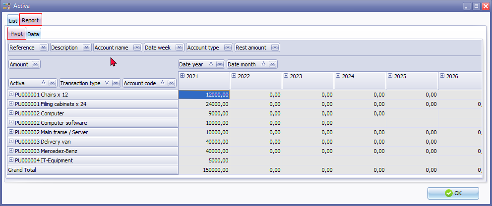
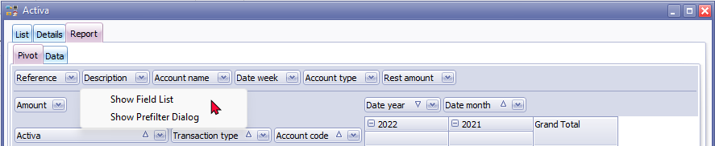
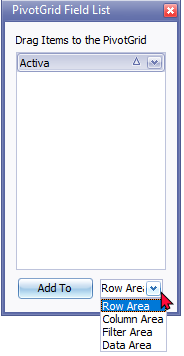
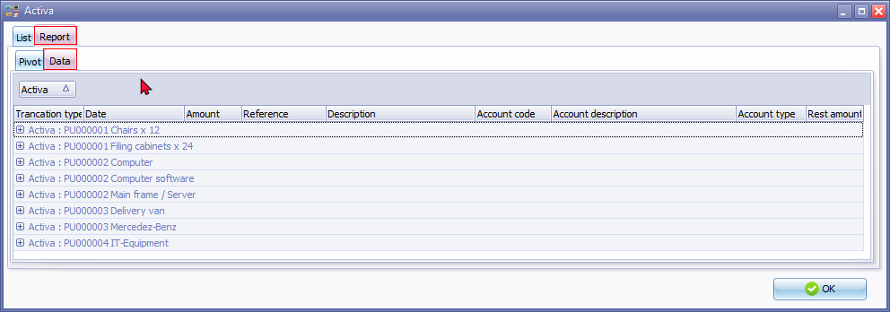
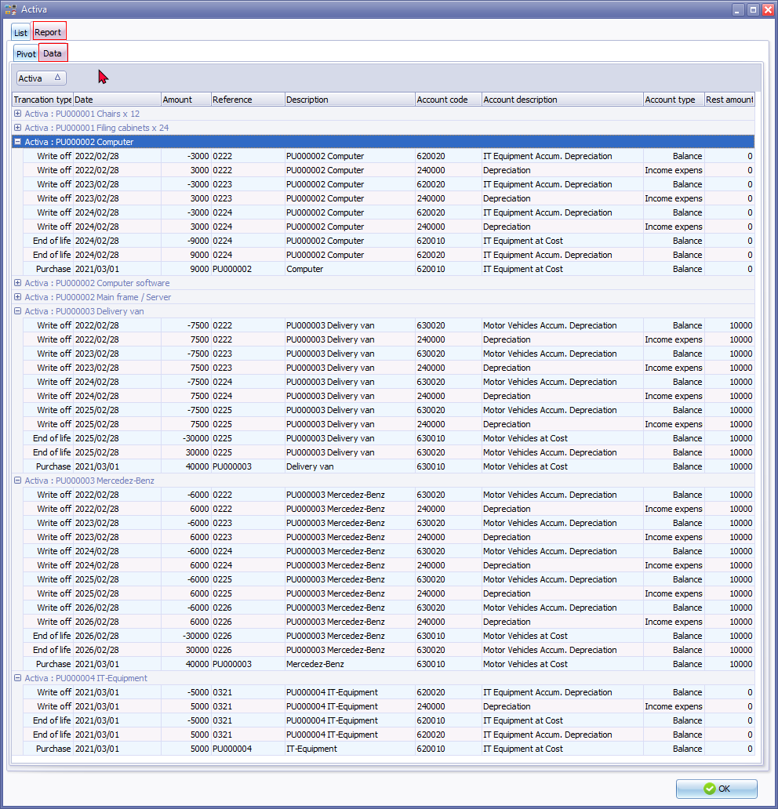

Activa reports
Activa transactions - Reports tab
Activa - Reports - Pivot tab - Processed transactions
The Activa - Reports - Pivot tab allows you to group, sort, filter Activa totals and transactions, according to your specific requirements.
If a new asset is purchased, it will only list the purchase transactions type. Once the depreciation transactions is processed, the Write-off transactions for the asset will be listed.
To view the details of an asset, expand a transaction, click on the  icon and to collapse (hide) click on the
icon and to collapse (hide) click on the  icon.
icon.


The default view of the Pivot for the Activa plugin, is grouped in four sections (i.e. Filter Area, Data Area, Row Area and Column Area) and is as follows:
Filter Area:
- Reference - The “Reference” is as follows:
- Documents - Document number as generated when creating documents.
- Batches - The "Reference" - as generated when the transactions (lines) on the Activa - List tab were processed ("Write off" or "End of life") transactions is generated. If Purchase transactions of Assets is processed on different dates, it will create new "Reference" for each asset.
|
|
If asset purchases is processed in "Batch entry" screens, the reference as entered the “Reference” column of "Batch entry" screens will be listed. The reference of Balancing entries in batches is indicated with eight (8) asterisks “********”. |

- Description - Transaction description
- Documents - The document type (i.e. Purchase and Supplier returns) and the description of the Asset item or description of the asset as entered in the "Description" column of the document lines.
- Batches - The description of the transaction entered in the “Description” column of "Batch entry" screens. The reference of Balancing entries in batches is indicated with eight (8) asterisks “********”.
|
|
If asset purchases is processed in "Batch entry" screens, the reference as entered the “Description” column of "Batch entry" screens will be listed. The reference of Balancing entries in batches is indicated with eight (8) asterisks “********” and is added to the "Description". |
- Account name - The account name or account description of the Asset account at cost and Asset accumulated depreciation account (Balance sheet) or Depreciation (Income Statement) account.
- Date week - The number of the week (from 1 to 53) for a calendar year.
- Account type - Balance sheet or Income statement.
- Rest amount - The amounts entered for the scrap value (trade-in value) of the asset at the end of the asset's life cycle (in the "Rest value" field of the Asset's detail form.
Data Area:
- Amount - The debit amounts will be listed. Credit amounts (prefixed by a - (minus sign)) will be listed.
Row Area:
- Activa - The Purchase document number and the description of the Asset item or description of the asset as entered in the "Description" column of the document lines.
- Transaction type - "Purchase, Write-off" or "End of life".
- Account code - The account code of the Asset account at cost (Balance sheet) or Depreciation (Income Statement) account.
Column Area:
- Date year - The transaction totals will be displayed only for the year which on which purchase and write off transactions were processed. In this example 2021 will be listed for transactions processed for March 2021 and transactions were processed in February 2022.
- Date month - The transaction totals will be displayed only for the months in which transactions were processed.
|
|
PivotGrid Field List You may rignt-click on any of the three sections (i.e. Filter Area, Data Area and Column Area) to launch the context menu.  By default, all data filelds is listed on the Pivot table. The "Show Filed List" context menu option, will list the empty "PivotGrid Filed List". You may drag any of the data fileds onto the "PivotGrid Filed List" screen. The selected data field will removed from the Pivot and listed in the be listed "PivotGrid Filed List" screen.  You may add it to the "Row Area, Column Area, Filter Area" and "Data Area". |
|
|
PivotGrid Field List You may rignt-click on any of the three sections (i.e. Filter Area, Data Area and Column Area) to launch the context menu. By default, all data filelds is listed on the Pivot table. The "Show Filed List" context menu option, will list the empty "PivotGrid Filed List". You may drag any of the data fileds onto the "PivotGrid Filed List" screen. The selected data field will removed from the Pivot and listed in the be listed "PivotGrid Filed List" screen. You may add it to the "Row Area, Column Area, Filter Area" and "Data Area". |
Activa - Reports - Data tab - Processed transactions
The Activa - Reports - Data tab lists all purchase transactions of the Fixed assets added and processed as well as the write off transactions over the life span of Fixed assets.

To view the details of an asset, expand a transaction, click on the icon and to collapse (hide) click on the icon.

The columns is as follows:
- Transaction type - "Purchase, Write off" or "End of life". Purchase transactions is the assets at cost price. Write off transactions will be posted to the Accumulated depreciation (Balance sheet) account as a credit amount and to the Depreciation (Income statement) account type as a debit amount.
- Date - The transaction date for the Purchase transaction. When write off transactions is processed it will be the date when the transactions on scheduled write off date is processed.
- Amount - Purchases of Fixed assets Purchase transactions is the assets at cost price is a debit amount. Write off transactions will be posted to the Accumulated depreciation (Balance sheet) account as a credit amount and to the Depreciation (Income statement) account type as a debit amount. Credit amounts (prefixed by a - (minus sign)).
- Reference - Documents - The document number on which the asset was purchased. When write off transactions is processed it will be the "Reference" automatically generated for the write off transactions. If more than one date is applicable to the transactions on scheduled write off date, it will generate the same reference number for all transactions with the same processing date and another reference number for another scheduled write off date.
- Description - Transaction description Documents - The document number for the document type (i.e. Purchase and Supplier returns) and the description of the Asset item or description of the asset as entered in the "Description" column of the document lines.
- Account code - The account code of the Asset account at cost for purchases of fixed assets and Asset accumulated depreciation account (Balance sheet) for write off transactions or Depreciation (Income Statement) account.
- Account description - The account name or account description of the Asset account at cost for purchases of fixed assets and Asset accumulated depreciation account (Balance sheet) for write off transactions or Depreciation (Income Statement) account.
- Account type - Balance sheet or Income statement.
- Rest amount - The amounts entered for the scrap value (trade-in value) of the asset at the end of the asset's life cycle (in the "Rest value" field of the Asset's detail form.